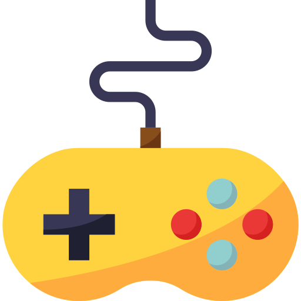
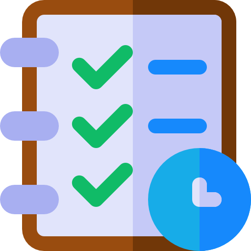

Hi! I'm Lance, a game designer and writer from Los Angeles California. I graduated from the University of California, Santa Cruz in 2024 with a Bachelors in Computer Science, Game Design. I worked as the Narrative Lead and Co-Producer on Through the Fog, a third-person rogue-lite exploration game that was published to Steam in June of 2024.
My skills encompass writing, game design, narrative design, rule design, quality assurance, and production planning. My core strengths include collaborating with creative teams to bridge different disciplines and bring ideas to cohesive fruition with a holistic approach to the development process.
My enthusiasm for game development stems from my love for storytelling and meaningful gameplay integration. Outside of my own skills, I have a deep love for art, animation, and great UI and UX design. I love playing many genres of video games but have sunk most of my time in RPGs, MMOs, and rogue-lite/like titles. I also have a passion for TTRPGs and have created several classes and subclasses as personal projects as well as multiple campaigns for me and my friends to play.
Through the Fog is a third-person roguelite exploration role-playing-game.
RGBY Runner is an endless runner, where you must change the color of the world in order to make obstacles disappear into the background.
This interactive deck serves as a supplementary tool for someone playing the College of Spirits subclass. Its purpose is to aid in immersion, giving the player an interactive way of rolling for inspiration, or for a Tale from the Beyond.
A collection of custom classes and subclasses for Dungeons and Dragons 5th Editiion.

C

C++

C#

Markdown

JavaScript

HTML

Bash
Inky
Twine
Trello

VS Code

Git
Writing
Rule Design
Game Design
Narrative Design
Quality Assurance
Production Planning